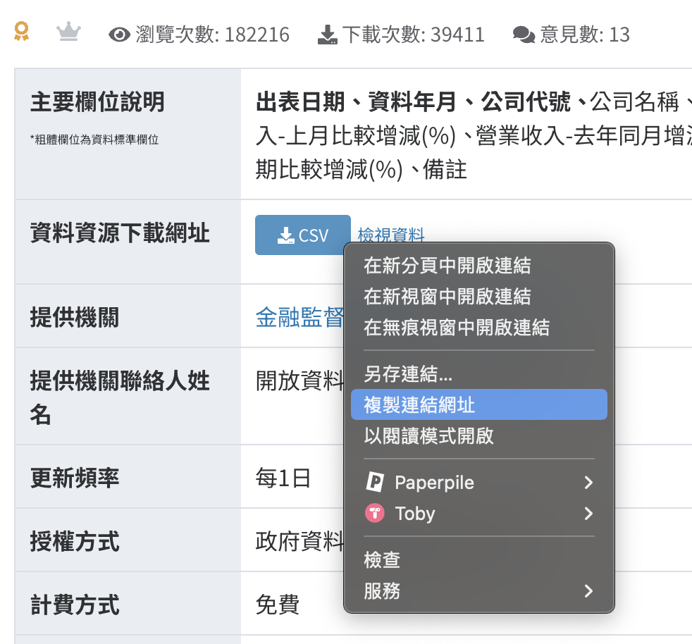
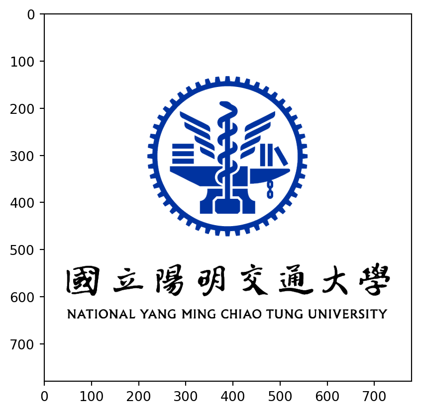
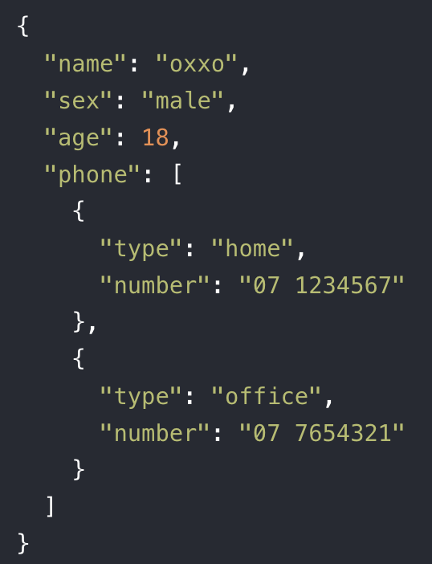

3. Data I/O
Yi-Ju Tseng
資料分析步驟
- 資料匯入與匯出
- 資料清洗處理
- 資料分析
- 資料呈現與視覺化
Data input and output
- Data input
- From file
- From google drive
- From API
- Webscrapping
- Data output
前置作業
為了成功從https (加密封包傳輸)下載資料，首先取消證書驗證
Data input and output
- Data input
- From file
- From google drive
- From API
- Webscrapping
- Data output
From File
From File
- .csv 逗號分隔格式檔案
- .xls Excel格式檔案
- .pkl pickle格式檔案 python常用
- 純文字資料
- 其他格式
.csv 逗號分隔格式檔案
- .csv 為逗號分隔格式檔案
pandas的read_csv(路徑)，將檔案匯入- 路徑可以是本機端路徑，也可以是網址
import pandas as pd
url = "https://quality.data.gov.tw//dq_download_csv.php?nid=102775&md5_url=ea56d6e1f2642b2c5c44f9e8b6185d54"
df_csv = pd.read_csv(url)
df_csv.head()| 停車場型態 | 停車場代碼 | 停車場名稱 | 停車場地址 | 停車場電話 | 即時車位 | 一般大型車 | 一般小型車 | 身障者小型車 | 婦幼者小型車 | 綠能小型車 | 一般機車 | 身障者機車 | 小型車充電樁 | 收費時間 | 收費費率 | 經緯度 | 備註欄 | |
|---|---|---|---|---|---|---|---|---|---|---|---|---|---|---|---|---|---|---|
| 0 | 公有免費停車場 | 044 | 佳里停1公有停車場 | 臺南市佳里區安西路與文化路交叉口 | 2138172 | -1 | 0 | 11 | 1 | 1 | 1 | 0 | 0 | 0 | NaN | NaN | 23.16238，120.1714 | NaN |
| 1 | 公有免費停車場 | 045 | 佳里停2公有停車場 | 臺南市佳里區文化路與公園路交叉口 | 2138172 | -1 | 0 | 8 | 1 | 1 | 1 | 0 | 0 | 0 | NaN | NaN | 23.16293，120.17216 | NaN |
| 2 | 公有免費停車場 | 100 | 停2立體停車場 | 臺南市新市區環東路1段與南科二路 | NaN | -1 | 0 | 417 | 6 | 0 | 0 | 70 | 2 | 0 | NaN | NaN | 23.096305，120.284649 | 南科管理局 |
| 3 | 公有免費停車場 | 101 | 管理局地下停車場 | 臺南市新市區環東路1段與南科三路 | NaN | -1 | 0 | 402 | 14 | 0 | 0 | 467 | 6 | 0 | NaN | NaN | 23.101229，120.282238 | 南科管理局 |
| 4 | 公有免費停車場 | 102 | 管理局戶外平面停車場 | 臺南市新市區環東路1段 | NaN | -1 | 0 | 227 | 2 | 0 | 0 | 46 | 0 | 0 | NaN | NaN | 23.102632，120.283831 | 南科管理局 |
.csv 逗號分隔格式檔案
| 停車場型態 | 停車場代碼 | 停車場名稱 | 停車場地址 | 停車場電話 | 即時車位 | 一般大型車 | 一般小型車 | 身障者小型車 | 婦幼者小型車 | 綠能小型車 | 一般機車 | 身障者機車 | 小型車充電樁 | 收費時間 | 收費費率 | 經緯度 | 備註欄 | |
|---|---|---|---|---|---|---|---|---|---|---|---|---|---|---|---|---|---|---|
| 0 | 公有免費停車場 | 044 | 佳里停1公有停車場 | 臺南市佳里區安西路與文化路交叉口 | 2138172 | -1 | 0 | 11 | 1 | 1 | 1 | 0 | 0 | 0 | NaN | NaN | 23.16238，120.1714 | NaN |
| 1 | 公有免費停車場 | 045 | 佳里停2公有停車場 | 臺南市佳里區文化路與公園路交叉口 | 2138172 | -1 | 0 | 8 | 1 | 1 | 1 | 0 | 0 | 0 | NaN | NaN | 23.16293，120.17216 | NaN |
| 2 | 公有免費停車場 | 100 | 停2立體停車場 | 臺南市新市區環東路1段與南科二路 | NaN | -1 | 0 | 417 | 6 | 0 | 0 | 70 | 2 | 0 | NaN | NaN | 23.096305，120.284649 | 南科管理局 |
| 3 | 公有免費停車場 | 101 | 管理局地下停車場 | 臺南市新市區環東路1段與南科三路 | NaN | -1 | 0 | 402 | 14 | 0 | 0 | 467 | 6 | 0 | NaN | NaN | 23.101229，120.282238 | 南科管理局 |
| 4 | 公有免費停車場 | 102 | 管理局戶外平面停車場 | 臺南市新市區環東路1段 | NaN | -1 | 0 | 227 | 2 | 0 | 0 | 46 | 0 | 0 | NaN | NaN | 23.102632，120.283831 | 南科管理局 |
Hands-on - .csv檔案匯入
- 以上市公司每月營業收入彙總表為例
- 複製
csv資料下載網址 - 用
pandas的read_csv()函數將檔案匯入 - 匯入後印出前5個row

.xls Excel格式檔案
- 需要安裝
openpyxl和xlrd套件
.xls Excel格式檔案
- 使用
pandas的read_excel(路徑) - 路徑可以是本機端路徑，也可以是網址
- 可設定
sheet_name參數指定工作表名稱
url = 'https://github.com/CGUIM-BigDataAnalysis/BigDataCGUIM/raw/master/EMBA_BigData/Data/%E6%96%B0%E7%AB%B9%E4%B8%8D%E5%8B%95%E7%94%A2.xls'
house = pd.read_excel(url,sheet_name = "不動產買賣")
house.head()| 鄉鎮市區 | 交易標的 | 土地位置建物門牌 | 土地移轉總面積平方公尺 | 都市土地使用分區 | 非都市土地使用分區 | 非都市土地使用編定 | 交易年月日 | 交易筆棟數 | 移轉層次 | ... | 總價元 | 單價元平方公尺 | 車位類別 | 車位移轉總面積平方公尺 | 車位總價元 | 備註 | 主建物面積 | 附屬建物面積 | 陽台面積 | 電梯 | |
|---|---|---|---|---|---|---|---|---|---|---|---|---|---|---|---|---|---|---|---|---|---|
| 0 | 新竹市 | 土地 | 明湖段840地號 | 18.74 | NaN | 山坡地保育區 | 農牧用地 | 1121101 | 土地1建物0車位0 | NaN | ... | 150000 | 8004.0 | NaN | 0.0 | 0 | NaN | 0.00 | 0.0 | 0.00 | 無 |
| 1 | 新竹市 | 土地 | 新莊段198地號 | 42.95 | NaN | NaN | NaN | 1121101 | 土地12建物0車位0 | NaN | ... | 4576000 | 106542.0 | NaN | 0.0 | 0 | 親友、員工、共有人或其他特殊關係間之交易； | 0.00 | 0.0 | 0.00 | 無 |
| 2 | 新竹市 | 房地(土地+建物) | 新竹市新竹市光華街９５巷３號５樓之３ | 6.72 | 住 | NaN | NaN | 1121101 | 土地1建物1車位0 | 五層 | ... | 3630000 | 81665.0 | NaN | 0.0 | 0 | NaN | 31.62 | 0.0 | 3.74 | 有 |
| 3 | 新竹市 | 土地 | 南門段四小段177-25地號 | 29.67 | 都市：其他:道路用地 | NaN | NaN | 1121103 | 土地1建物0車位0 | NaN | ... | 1316221 | 44362.0 | NaN | 0.0 | 0 | 包含公共設施保留地用地； | 0.00 | 0.0 | 0.00 | 無 |
| 4 | 新竹市 | 土地 | 東山段一小段189-11地號 | 357.38 | NaN | NaN | NaN | 1121107 | 土地1建物0車位0 | NaN | ... | 5038989 | 14100.0 | NaN | 0.0 | 0 | 協議價購； | 0.00 | 0.0 | 0.00 | 無 |
5 rows × 31 columns
.xls Excel格式檔案
鄉鎮市區 交易標的 土地位置建物門牌 土地移轉總面積平方公尺 都市土地使用分區 非都市土地使用分區 \
0 新竹市 土地 明湖段840地號 18.74 NaN 山坡地保育區
1 新竹市 土地 新莊段198地號 42.95 NaN NaN
2 新竹市 房地(土地+建物) 新竹市新竹市光華街９５巷３號５樓之３ 6.72 住 NaN
3 新竹市 土地 南門段四小段177-25地號 29.67 都市：其他:道路用地 NaN
4 新竹市 土地 東山段一小段189-11地號 357.38 NaN NaN
非都市土地使用編定 交易年月日 交易筆棟數 移轉層次 ... 總價元 單價元平方公尺 車位類別 \
0 農牧用地 1121101 土地1建物0車位0 NaN ... 150000 8004.0 NaN
1 NaN 1121101 土地12建物0車位0 NaN ... 4576000 106542.0 NaN
2 NaN 1121101 土地1建物1車位0 五層 ... 3630000 81665.0 NaN
3 NaN 1121103 土地1建物0車位0 NaN ... 1316221 44362.0 NaN
4 NaN 1121107 土地1建物0車位0 NaN ... 5038989 14100.0 NaN
車位移轉總面積平方公尺 車位總價元 備註 主建物面積 附屬建物面積 陽台面積 電梯
0 0.0 0 NaN 0.00 0.0 0.00 無
1 0.0 0 親友、員工、共有人或其他特殊關係間之交易； 0.00 0.0 0.00 無
2 0.0 0 NaN 31.62 0.0 3.74 有
3 0.0 0 包含公共設施保留地用地； 0.00 0.0 0.00 無
4 0.0 0 協議價購； 0.00 0.0 0.00 無
[5 rows x 31 columns]Hands-on - .xls Excel格式檔案
- 以水位雨量站為例
- 複製
Excel資料下載網址 - 用pandas 的
read_excel()函數將檔案匯入，記得設定工作表名稱 - 匯入後印出第三個row
.pkl pickle格式檔案
- python專用，可儲存 python 的工作階段與變數
- 常用functions
dumps,dump:儲存loads,load:讀取
- 確保使用信任來源的pickle檔案以避免安全風險
with ... as ...:可自動在執行完區塊程式後將檔案關閉
純文字資料
- 使用
oepn(檔名)開啟檔案- 以sequence形式儲存
- 使用
檔案物件.read()讀取內容。一次取全部 - 讀取完畢後，使用
檔案物件.close()關閉檔案
純文字資料
- 使用
oepn(檔名)開啟檔案 - 使用
檔案物件.readlines()讀取內容。一次取全部，分行存成list - 讀取完畢後，使用
檔案物件.close()關閉檔案
純文字資料
- 使用
oepn(檔名)開啟檔案 - 使用
檔案物件.readline()讀取內容。逐行讀 - 讀取完畢後，使用
檔案物件.close()關閉檔案
dist + for + open
name = 'trump.txt'
handle = open(name)
counts = dict()
for line in handle:
words = line.split()
for word in words:
counts[word] = counts.get(word,0) + 1
bigcount = None
bigword = None
for word,count in counts.items():
if bigcount is None or count > bigcount:
bigword = word
bigcount = count
print(bigword, bigcount)the 31其他格式
- 以圖片為例，需安裝並載入繪圖用套件
matplotlib - 使用
plt.imread(路徑)載入圖片，為RGB向量
import matplotlib
import matplotlib.pyplot as plt
im = plt.imread('figures/nycu_logo.png')
print(im)
plt.imshow(im, 'gray')
plt.show()[[[1. 1. 1. 0.]
[1. 1. 1. 0.]
[1. 1. 1. 0.]
...
[1. 1. 1. 0.]
[1. 1. 1. 0.]
[1. 1. 1. 0.]]
[[1. 1. 1. 0.]
[1. 1. 1. 0.]
[1. 1. 1. 0.]
...
[1. 1. 1. 0.]
[1. 1. 1. 0.]
[1. 1. 1. 0.]]
[[1. 1. 1. 0.]
[1. 1. 1. 0.]
[1. 1. 1. 0.]
...
[1. 1. 1. 0.]
[1. 1. 1. 0.]
[1. 1. 1. 0.]]
...
[[1. 1. 1. 0.]
[1. 1. 1. 0.]
[1. 1. 1. 0.]
...
[1. 1. 1. 0.]
[1. 1. 1. 0.]
[1. 1. 1. 0.]]
[[1. 1. 1. 0.]
[1. 1. 1. 0.]
[1. 1. 1. 0.]
...
[1. 1. 1. 0.]
[1. 1. 1. 0.]
[1. 1. 1. 0.]]
[[1. 1. 1. 0.]
[1. 1. 1. 0.]
[1. 1. 1. 0.]
...
[1. 1. 1. 0.]
[1. 1. 1. 0.]
[1. 1. 1. 0.]]]
其他格式
- 使用
plt.imshow(向量)呈現圖片 plt.show()在視窗中呈現圖片內容

Data input and output
- Data input
- From file
- From google drive
- From API
- Webscrapping
- Data output
從Google drive匯入
從Google drive匯入 - google 試算表
pandas套件- 注意原始連結後方，須為文件ID
- 若有
/edit#gid=0或/edit?usp=sharing字樣，請刪除
- 若有
- 需要加工連結，在原始連結最後加上
/export?format=csv - 如果不是公開資料表，需要授權
- 參考
google-api-python-client套件
- 參考
link="https://docs.google.com/spreadsheets/d/1WqkYGfZZinxqhyqnbHIDC4NrHXbApfm8m8EvFR4SPAU"
csv_link="/export?format=csv"
pd.read_csv(link+csv_link)| 交易日期 | 開盤 | 最高 | 最低 | 收盤 | 漲跌 | 漲跌(%) | 振幅(%) | 張數 | 筆數 | ... | 外資 | 投信 | 自營 | 合計 | 外資持股(%) | 融資增減 | 融資餘額 | 融券增減 | 融券餘額 | 券資比(%) | |
|---|---|---|---|---|---|---|---|---|---|---|---|---|---|---|---|---|---|---|---|---|---|
| 0 | 25/02/14 | 1065 | 1070 | 1060 | 1060 | -30 | -2.75 | 0.92 | 73,417 | 218,986 | ... | -20,971 | -91.4 | +34.5 | -21,028 | 73.4 | +1,090 | 23,081 | -100 | 111 | 0.48 |
| 1 | 25/02/13 | 1090 | 1095 | 1080 | 1090 | -10 | -0.91 | 1.36 | 35,682 | 72,456 | ... | -10,885 | +454 | +1,117 | -9,313 | 73.5 | +262 | 21,991 | -56 | 211 | 0.96 |
| 2 | 25/02/12 | 1110 | 1115 | 1100 | 1100 | -10 | -0.90 | 1.35 | 26,190 | 38,511 | ... | +213 | -19 | -347 | -153 | 73.6 | +129 | 21,729 | -4 | 267 | 1.23 |
| 3 | 25/02/11 | 1110 | 1115 | 1100 | 1110 | 5 | 0.45 | 1.36 | 21,023 | 31,837 | ... | +1,229 | -353 | -292 | +584 | 73.6 | -38 | 21,600 | 10 | 271 | 1.25 |
| 4 | 25/02/10 | 1125 | 1125 | 1095 | 1105 | -20 | -1.78 | 2.67 | 31,037 | 60,839 | ... | -2,271 | -132 | -479 | -2,882 | 73.6 | +532 | 21,638 | -24 | 261 | 1.21 |
| ... | ... | ... | ... | ... | ... | ... | ... | ... | ... | ... | ... | ... | ... | ... | ... | ... | ... | ... | ... | ... | ... |
| 235 | 24/02/23 | 701 | 703 | 696 | 697 | 5 | 0.72 | 1.01 | 48,404 | 48,018 | ... | +20,881 | -366 | -570 | +19,946 | 74.2 | -1,807 | 13,053 | 9 | 392 | 3.00 |
| 236 | 24/02/22 | 695 | 695 | 685 | 692 | 11 | 1.62 | 1.47 | 34,269 | 36,998 | ... | +7,728 | +37.7 | +2,125 | +9,890 | 74.1 | +899 | 14,860 | 19 | 383 | 2.58 |
| 237 | 24/02/21 | 678 | 683 | 678 | 681 | -6 | -0.87 | 0.73 | 31,981 | 36,004 | ... | -5,942 | +39.3 | +1,514 | -4,389 | 74.0 | -145 | 13,961 | -26 | 364 | 2.61 |
| 238 | 24/02/20 | 675 | 688 | 675 | 687 | 9 | 1.33 | 1.92 | 31,404 | 32,847 | ... | +2,641 | -12.4 | -1,188 | +1,441 | 74.1 | -249 | 14,106 | 23 | 390 | 2.76 |
| 239 | 24/02/19 | 674 | 682 | 674 | 678 | -5 | -0.73 | 1.17 | 36,367 | 35,240 | ... | -10,732 | +81.6 | +1,855 | -8,795 | 74.0 | +616 | 14,355 | -5 | 367 | 2.56 |
240 rows × 22 columns
從Google drive匯入 - google 試算表
| 交易日期 | 開盤 | 最高 | 最低 | 收盤 | 漲跌 | 漲跌(%) | 振幅(%) | 張數 | 筆數 | ... | 外資 | 投信 | 自營 | 合計 | 外資持股(%) | 融資增減 | 融資餘額 | 融券增減 | 融券餘額 | 券資比(%) | |
|---|---|---|---|---|---|---|---|---|---|---|---|---|---|---|---|---|---|---|---|---|---|
| 0 | 25/02/14 | 1065 | 1070 | 1060 | 1060 | -30 | -2.75 | 0.92 | 73,417 | 218,986 | ... | -20,971 | -91.4 | +34.5 | -21,028 | 73.4 | +1,090 | 23,081 | -100 | 111 | 0.48 |
| 1 | 25/02/13 | 1090 | 1095 | 1080 | 1090 | -10 | -0.91 | 1.36 | 35,682 | 72,456 | ... | -10,885 | +454 | +1,117 | -9,313 | 73.5 | +262 | 21,991 | -56 | 211 | 0.96 |
| 2 | 25/02/12 | 1110 | 1115 | 1100 | 1100 | -10 | -0.90 | 1.35 | 26,190 | 38,511 | ... | +213 | -19 | -347 | -153 | 73.6 | +129 | 21,729 | -4 | 267 | 1.23 |
| 3 | 25/02/11 | 1110 | 1115 | 1100 | 1110 | 5 | 0.45 | 1.36 | 21,023 | 31,837 | ... | +1,229 | -353 | -292 | +584 | 73.6 | -38 | 21,600 | 10 | 271 | 1.25 |
| 4 | 25/02/10 | 1125 | 1125 | 1095 | 1105 | -20 | -1.78 | 2.67 | 31,037 | 60,839 | ... | -2,271 | -132 | -479 | -2,882 | 73.6 | +532 | 21,638 | -24 | 261 | 1.21 |
| ... | ... | ... | ... | ... | ... | ... | ... | ... | ... | ... | ... | ... | ... | ... | ... | ... | ... | ... | ... | ... | ... |
| 235 | 24/02/23 | 701 | 703 | 696 | 697 | 5 | 0.72 | 1.01 | 48,404 | 48,018 | ... | +20,881 | -366 | -570 | +19,946 | 74.2 | -1,807 | 13,053 | 9 | 392 | 3.00 |
| 236 | 24/02/22 | 695 | 695 | 685 | 692 | 11 | 1.62 | 1.47 | 34,269 | 36,998 | ... | +7,728 | +37.7 | +2,125 | +9,890 | 74.1 | +899 | 14,860 | 19 | 383 | 2.58 |
| 237 | 24/02/21 | 678 | 683 | 678 | 681 | -6 | -0.87 | 0.73 | 31,981 | 36,004 | ... | -5,942 | +39.3 | +1,514 | -4,389 | 74.0 | -145 | 13,961 | -26 | 364 | 2.61 |
| 238 | 24/02/20 | 675 | 688 | 675 | 687 | 9 | 1.33 | 1.92 | 31,404 | 32,847 | ... | +2,641 | -12.4 | -1,188 | +1,441 | 74.1 | -249 | 14,106 | 23 | 390 | 2.76 |
| 239 | 24/02/19 | 674 | 682 | 674 | 678 | -5 | -0.73 | 1.17 | 36,367 | 35,240 | ... | -10,732 | +81.6 | +1,855 | -8,795 | 74.0 | +616 | 14,355 | -5 | 367 | 2.56 |
240 rows × 22 columns
從Google drive匯入 - google 試算表
交易日期 開盤 最高 最低 收盤 漲跌 漲跌(%) 振幅(%) 張數 筆數 ... \
0 25/02/14 1065 1070 1060 1060 -30 -2.75 0.92 73,417 218,986 ...
1 25/02/13 1090 1095 1080 1090 -10 -0.91 1.36 35,682 72,456 ...
2 25/02/12 1110 1115 1100 1100 -10 -0.90 1.35 26,190 38,511 ...
3 25/02/11 1110 1115 1100 1110 5 0.45 1.36 21,023 31,837 ...
4 25/02/10 1125 1125 1095 1105 -20 -1.78 2.67 31,037 60,839 ...
.. ... ... ... ... ... .. ... ... ... ... ...
235 24/02/23 701 703 696 697 5 0.72 1.01 48,404 48,018 ...
236 24/02/22 695 695 685 692 11 1.62 1.47 34,269 36,998 ...
237 24/02/21 678 683 678 681 -6 -0.87 0.73 31,981 36,004 ...
238 24/02/20 675 688 675 687 9 1.33 1.92 31,404 32,847 ...
239 24/02/19 674 682 674 678 -5 -0.73 1.17 36,367 35,240 ...
外資 投信 自營 合計 外資持股(%) 融資增減 融資餘額 融券增減 融券餘額 券資比(%)
0 -20,971 -91.4 +34.5 -21,028 73.4 +1,090 23,081 -100 111 0.48
1 -10,885 +454 +1,117 -9,313 73.5 +262 21,991 -56 211 0.96
2 +213 -19 -347 -153 73.6 +129 21,729 -4 267 1.23
3 +1,229 -353 -292 +584 73.6 -38 21,600 10 271 1.25
4 -2,271 -132 -479 -2,882 73.6 +532 21,638 -24 261 1.21
.. ... ... ... ... ... ... ... ... ... ...
235 +20,881 -366 -570 +19,946 74.2 -1,807 13,053 9 392 3.00
236 +7,728 +37.7 +2,125 +9,890 74.1 +899 14,860 19 383 2.58
237 -5,942 +39.3 +1,514 -4,389 74.0 -145 13,961 -26 364 2.61
238 +2,641 -12.4 -1,188 +1,441 74.1 -249 14,106 23 390 2.76
239 -10,732 +81.6 +1,855 -8,795 74.0 +616 14,355 -5 367 2.56
[240 rows x 22 columns]Hands-on - google 試算表匯入
- 以Example Spreadsheet為例
- 加工連結 (hint:前兩頁投影片)
- 用pandas 的
pd.read_csv()函數將檔案匯入 - 匯入後印出第Home State column
從Google drive匯入 - 下載後匯入
使用gdown指令，並輸入google drive 檔案ID
https://drive.google.com/uc?id=1ivP1VeeU0QTdN1pJcudEaIgKO33DMDm7
執行後會儲存在工作路徑中，在用相對應的方法匯入即可
Data input and output
- Data input
- From file
- From google drive
- From API
- Webscrapping
- Data output
From API
From API
- Open Data
- API (Application programming interfaces)
- JSON格式檔案
Open Data 開放資料
- 2011年推動開放政府與開放資料 (維基百科)
- 不受著作權、專利權，以及其他管理機制所限制，任何人都可以自由出版使用
- 常見的儲存方式為:
CSVJSONXML
Open Data 開放資料常見平台
API
- 應用程式介面
- Application Programming Interfaces
- 為了讓第三方的開發者可以額外開發應用程式來強化他們的產品，推出可以與系統溝通的介面
- 有API輔助可將資料擷取過程自動化
- 以下載Open Data為例，若檔案更新頻繁，使用手動下載相當耗時
- 維基百科
API - Open Data
- [桃園公共自行車即時服務資料]https://opendata.tycg.gov.tw/datalist/5ca2bfc7-9ace-4719-88ae-4034b9a5a55c)資料
- 每日更新
- 不可能每日手動下載
- 提供透過API下載的服務
- 透過API下載的資料格式: JSON格式
JSON format
- JSON (Javascript Object Notation)
- 輕量級的資料交換語言
- From application programming interfaces (APIs)
- JavaScript、Java、Node.js應用
- 一些NoSQL資料庫用JSON儲存資料：MongoDB
- Wiki

JSON檔案匯入
- 從網路載資料，需要安裝
requests套件 - 處理json資料，需要安裝與載入
json套件
JSON檔案匯入
- API網址參考臺中市公共自行車(YouBike2.0)
- 點選API獲取相關資訊
- 使用
requests套件的get(網址)擷取資料 - 此API會檔短時間內擷取多次的要求，因此放入
params = {'param':'1'}以及headers = {'Connection':'close'}設定 - 最後將使用
回傳結果.json()，將檔案轉成JSON格式
JSON檔案匯入
探索資料，使用.keys()查看keys
JSON檔案匯入
探索資料，發現是dist (data)中retVal key儲存含有資料的list
[{'scity': '台中市',
'scityen': 'Taichung City',
'sna': 'YouBike2.0_綠川東中山路口',
'sarea': '中區',
'ar': '綠川東街/中山路口(東側)',
'snaen': 'YouBike2.0_Luchuan E. St. / Zhongshan Rd.',
'sareaen': 'Central Dist',
'aren': 'Luchuan E. St. & Zhongshan Rd. Intersection (East)',
'sno': '500601001',
'tot': '16',
'sbi': '15',
'mday': '20250328190334',
'lat': '24.13785',
'lng': '120.68337',
'bemp': '1',
'act': 1,
'sbi_detail': {'yb2': '14', 'eyb': '1'}},
{'scity': '台中市',
'scityen': 'Taichung City',
'sna': 'YouBike2.0_繼光光復路口',
'sarea': '中區',
'ar': '繼光街166號(對側人行道)',
'snaen': 'YouBike2.0_Jiguang St. / Guangfu Rd.',
'sareaen': 'Central Dist',
'aren': 'No.166, Jiguang St. (Opposite)',
'sno': '500601002',
'tot': '18',
'sbi': '16',
'mday': '20250328190035',
'lat': '24.1411',
'lng': '120.68474',
'bemp': '2',
'act': 1,
'sbi_detail': {'yb2': '16', 'eyb': '0'}}]JSON檔案匯入
探索資料，發現是dist (data)中retVal key儲存含有資料的list
{'scity': '台中市',
'scityen': 'Taichung City',
'sna': 'YouBike2.0_綠川東中山路口',
'sarea': '中區',
'ar': '綠川東街/中山路口(東側)',
'snaen': 'YouBike2.0_Luchuan E. St. / Zhongshan Rd.',
'sareaen': 'Central Dist',
'aren': 'Luchuan E. St. & Zhongshan Rd. Intersection (East)',
'sno': '500601001',
'tot': '16',
'sbi': '15',
'mday': '20250328190334',
'lat': '24.13785',
'lng': '120.68337',
'bemp': '1',
'act': 1,
'sbi_detail': {'yb2': '14', 'eyb': '1'}}Hands-on - JSON檔案匯入練習
- 練習用資料：YouBike2.0臺北市公共自行車即時資訊
- API地址在此
- 使用檔案匯入範例，將資料匯入Python中
- 提示：設定url
- 找到資料的儲存處，並將答案print出
From API - Recap
- Open Data
- API (Application programming interfaces)
- JSON格式檔案
requests.get()下載，.json轉型 - 用
type()查看資料類別 - 若為dist，則可使用
keys()查看資料擷取方法，並印出來試試看
Data input and output
- Data input
- From file
- From google drive
- From API
- Webscrapping
- Data output
網頁爬蟲 Webscraping
網頁爬蟲 Webscraping
- 不是每個網站都提供API
- 人工複製貼上?!
- 程式化的方式擷取網頁資料: 網頁爬蟲（Webscraping）（Webscraping Wiki）
- 可能耗費很多網頁流量和資源 －很可能被鎖IP
- 使用
beautifulsoup4套件輔助
網頁爬蟲 Webscraping-beautifulsoup4
需要先安裝beautifulsoup4以及requests套件。
- 擷取條件的撰寫會因網頁語法不同而有差異
- 使用Google Chrome開發工具輔助觀察擷取資料的條件
- 或是按右鍵，點選“檢查”
- 或使用SelectorGadget輔助
- 觀察需要擷取的資料所在HTML片段
- css class, id 等
即時股價爬取
HTML/XML 101
- Element:
<a class=’link’ href=’url’>29.99</a> - Start tag:
<a> - End tag:
</a> - Attribute屬性:
href=’url’,class=’link’ - Text文字:
29.99
即時股價爬取 - 下載html
- 使用
requests套件的get(網址)函數，輸入網址，將網頁載入python分析環境。 - 成功載入網頁後，針對該物件，使用
.text取得網頁原始碼 (.html)
StockUrl = "https://www.google.com/finance/quote/2330:TPE?hl=zh-TW"
res = requests.get(StockUrl)
res.text[0:1000] ## print first 1000 chars'<!doctype html><html lang="zh-TW" dir="ltr"><head><base href="https://www.google.com/finance/"><link rel="preconnect" href="//www.gstatic.com"><meta name="referrer" content="origin"><script nonce="XzHZQDbCTzUa81k2Wf7aKw">window[\'ppConfig\'] = {productName: \'GoogleFinanceUi\', deleteIsEnforced: true , sealIsEnforced: true , heartbeatRate: 0.5 , periodicReportingRateMillis: 60000.0 , disableAllReporting: false };(function(){\'use strict\';function k(a){var b=0;return function(){return b<a.length?{done:!1,value:a[b++]}:{done:!0}}}var l=typeof Object.defineProperties=="function"?Object.defineProperty:function(a,b,c){if(a==Array.prototype||a==Object.prototype)return a;a[b]=c.value;return a};\nfunction m(a){a=["object"==typeof globalThis&&globalThis,a,"object"==typeof window&&window,"object"==typeof self&&self,"object"==typeof global&&global];for(var b=0;b<a.length;++b){var c=a[b];if(c&&c.Math==Math)return c}throw Error("Cannot find global object");}var n=m(this);function p(a,b){if(b)a:{var '即時股價爬取 - 解析html
- 使用
BeautifulSoup套件提供的解析方法BeautifulSoup(html檔案,格式)- 輸入剛剛載回來的html檔案
res.text，以及設定格式"html.parser"，完成HTML解析
- 輸入剛剛載回來的html檔案
- 解析後可使用
解析後內容.prettify取得排版後的網頁原始碼
即時股價爬取 - 搜尋所需element -1
Python 搜尋法，多用於搜尋<>tag內的內容
find(tag名稱):- 取得第一個符合條件的element
find_all(tag名稱)- 取得所有符合條件的elements
即時股價爬取 - 搜尋所需element -1
CCS selector 搜尋法，有較多彈性
select_one()- 取得第一個符合CSS條件的element (
classorid等屬性)
- 取得第一個符合CSS條件的element (
select()- 取得所有符合CSS條件的elements (
classorid等屬性)
- 取得所有符合CSS條件的elements (
即時股價爬取 - 搜尋所需element -1
範例：class 包含 fxKbKc
select()- 取得所有符合CSS條件的elements (
classorid等屬性)
- 取得所有符合CSS條件的elements (
class=可用.代表id=可用#代表
即時股價爬取 - 取出需要的資料 -1
.get_text()可抓取element內文字.get("屬性名稱")可抓取屬性內容
即時股價爬取 - 搜尋所需element -2
範例：class 包含 gyFHrc
select()- 取得所有符合CSS條件的elements (
classorid等屬性)
- 取得所有符合CSS條件的elements (
[<div class="gyFHrc"><span data-is-tooltip-wrapper="true"><div aria-describedby="i15" class="mfs7Fc" data-tooltip-anchor-boundary-type="2" data-tooltip-x-position="2" jsaction="mouseenter:tfO1Yc; focus:AHmuwe; blur:O22p3e; mouseleave:JywGue; touchstart:p6p2H; touchend:yfqBxc;mlnRJb:fLiPzd;" jscontroller="e2jnoe">前次收盤價</div><div aria-hidden="true" class="EY8ABd-OWXEXe-TAWMXe" id="i15" role="tooltip">最後收盤價</div></span><div class="P6K39c">$958.00</div></div>,
<div class="gyFHrc"><span data-is-tooltip-wrapper="true"><div aria-describedby="i16" class="mfs7Fc" data-tooltip-anchor-boundary-type="2" data-tooltip-x-position="2" jsaction="mouseenter:tfO1Yc; focus:AHmuwe; blur:O22p3e; mouseleave:JywGue; touchstart:p6p2H; touchend:yfqBxc;mlnRJb:fLiPzd;" jscontroller="e2jnoe">單日股價範圍</div><div aria-hidden="true" class="EY8ABd-OWXEXe-TAWMXe" id="i16" role="tooltip">過去一天內最高價與最低價之間的價格範圍</div></span><div class="P6K39c">$946.00 - $955.00</div></div>,
<div class="gyFHrc"><span data-is-tooltip-wrapper="true"><div aria-describedby="i17" class="mfs7Fc" data-tooltip-anchor-boundary-type="2" data-tooltip-x-position="2" jsaction="mouseenter:tfO1Yc; focus:AHmuwe; blur:O22p3e; mouseleave:JywGue; touchstart:p6p2H; touchend:yfqBxc;mlnRJb:fLiPzd;" jscontroller="e2jnoe">一年股價範圍</div><div aria-hidden="true" class="EY8ABd-OWXEXe-TAWMXe" id="i17" role="tooltip">過去 52 週內最高價與最低價之間的價格範圍</div></span><div class="P6K39c">$740.00 - $1,160.00</div></div>,
<div class="gyFHrc"><span data-is-tooltip-wrapper="true"><div aria-describedby="i18" class="mfs7Fc" data-tooltip-anchor-boundary-type="2" data-tooltip-x-position="2" jsaction="mouseenter:tfO1Yc; focus:AHmuwe; blur:O22p3e; mouseleave:JywGue; touchstart:p6p2H; touchend:yfqBxc;mlnRJb:fLiPzd;" jscontroller="e2jnoe">總市值</div><div aria-hidden="true" class="EY8ABd-OWXEXe-TAWMXe" id="i18" role="tooltip">一種估價方法，將公司股價乘以在外流通總股數。</div></span><div class="P6K39c">24.69兆 TWD</div></div>,
<div class="gyFHrc"><span data-is-tooltip-wrapper="true"><div aria-describedby="i19" class="mfs7Fc" data-tooltip-anchor-boundary-type="2" data-tooltip-x-position="2" jsaction="mouseenter:tfO1Yc; focus:AHmuwe; blur:O22p3e; mouseleave:JywGue; touchstart:p6p2H; touchend:yfqBxc;mlnRJb:fLiPzd;" jscontroller="e2jnoe">平均交易量</div><div aria-hidden="true" class="EY8ABd-OWXEXe-TAWMXe" id="i19" role="tooltip">過去 30 天內平均每天的成交股數</div></span><div class="P6K39c">4012.31萬</div></div>,
<div class="gyFHrc"><span data-is-tooltip-wrapper="true"><div aria-describedby="i20" class="mfs7Fc" data-tooltip-anchor-boundary-type="2" data-tooltip-x-position="2" jsaction="mouseenter:tfO1Yc; focus:AHmuwe; blur:O22p3e; mouseleave:JywGue; touchstart:p6p2H; touchend:yfqBxc;mlnRJb:fLiPzd;" jscontroller="e2jnoe">本益比</div><div aria-hidden="true" class="EY8ABd-OWXEXe-TAWMXe" id="i20" role="tooltip">目前股價與過去十二個月每股盈餘總和兩者之間的比率，這個比率可反映某檔股票的價格相較於其他股票是高還低</div></span><div class="P6K39c">21.04</div></div>,
<div class="gyFHrc"><span data-is-tooltip-wrapper="true"><div aria-describedby="i21" class="mfs7Fc" data-tooltip-anchor-boundary-type="2" data-tooltip-x-position="2" jsaction="mouseenter:tfO1Yc; focus:AHmuwe; blur:O22p3e; mouseleave:JywGue; touchstart:p6p2H; touchend:yfqBxc;mlnRJb:fLiPzd;" jscontroller="e2jnoe">股利收益率</div><div aria-hidden="true" class="EY8ABd-OWXEXe-TAWMXe" id="i21" role="tooltip">年股利與目前股價兩者之間的比率，這個比率可用於估計某檔股票的股利報酬率</div></span><div class="P6K39c">1.79%</div></div>,
<div class="gyFHrc"><span data-is-tooltip-wrapper="true"><div aria-describedby="i22" class="mfs7Fc" data-tooltip-anchor-boundary-type="2" data-tooltip-x-position="2" jsaction="mouseenter:tfO1Yc; focus:AHmuwe; blur:O22p3e; mouseleave:JywGue; touchstart:p6p2H; touchend:yfqBxc;mlnRJb:fLiPzd;" jscontroller="e2jnoe">主要交易所</div><div aria-hidden="true" class="EY8ABd-OWXEXe-TAWMXe" id="i22" role="tooltip">這檔證券的上市交易所</div></span><div class="P6K39c">TPE</div></div>,
<div class="gyFHrc"><div class="mfs7Fc"><span aria-hidden="true" class="notranslate gnzz8b"><svg class="NMm5M" focusable="false" height="14" viewbox="0 0 24 24" width="14"><path d="M12 6c1.1 0 2 .9 2 2s-.9 2-2 2-2-.9-2-2 .9-2 2-2m0 9c2.7 0 5.8 1.29 6 2v1H6v-.99c.2-.72 3.3-2.01 6-2.01m0-11C9.79 4 8 5.79 8 8s1.79 4 4 4 4-1.79 4-4-1.79-4-4-4zm0 9c-2.67 0-8 1.34-8 4v3h16v-3c0-2.66-5.33-4-8-4z"></path></svg></span>執行長</div><div class="P6K39c"><ul class="OEHt4c"><li><a class="tBHE4e" href="https://www.google.com/search?q=%E9%AD%8F%E5%93%B2%E5%AE%B6&hl=zh-TW" jslog="166166;ved:2ahUKEwjH-ODV0KyMAxVx7UwCHZO8LCEQlpIKegQIAhBc;track:click" target="_blank">魏哲家</a></li></ul></div></div>,
<div class="gyFHrc"><div class="mfs7Fc"><span aria-hidden="true" class="notranslate gnzz8b"><svg class="NMm5M" focusable="false" height="14" viewbox="0 0 24 24" width="14"><path d="M19 4h-1V2h-2v2H8V2H6v2H5c-1.11 0-1.99.9-1.99 2L3 20a2 2 0 0 0 2 2h14c1.1 0 2-.9 2-2V6c0-1.1-.9-2-2-2zm0 16H5V10h14v10z"></path><path d="M14.5 13a2.5 2.5 0 0 0 0 5 2.5 2.5 0 0 0 0-5z"></path></svg></span>成立時間</div><div class="P6K39c">1987年2月21日</div></div>,
<div class="gyFHrc"><div class="mfs7Fc"><span aria-hidden="true" class="notranslate gnzz8b"><svg class="NMm5M" focusable="false" height="14" viewbox="0 0 24 24" width="14"><path d="M12 2C8.13 2 5 5.13 5 9c0 5.25 7 13 7 13s7-7.75 7-13c0-3.87-3.13-7-7-7zM7 9c0-2.76 2.24-5 5-5s5 2.24 5 5c0 2.88-2.88 7.19-5 9.88C9.92 16.21 7 11.85 7 9z"></path><circle cx="12" cy="9" r="2.5"></circle></svg></span>總部</div><div class="P6K39c"><a class="tBHE4e" href="https://www.google.com/maps/place/8%2C%20Li-Hsin%20Rd.%206%2C%20%E6%96%B0%E7%AB%B9%2C%20%E8%87%BA%E7%81%A3%E7%9C%81%2C%20%E5%8F%B0%E7%81%A3?hl=zh-TW" jslog="166166;ved:2ahUKEwjH-ODV0KyMAxVx7UwCHZO8LCEQlpIKegQIAhBc;track:click" target="_blank">臺灣省新竹<br/>台灣</a></div></div>,
<div class="gyFHrc"><div class="mfs7Fc"><span aria-hidden="true" class="notranslate gnzz8b"><svg class="NMm5M" focusable="false" height="14" viewbox="0 0 24 24" width="14"><path d="M20 4H4a2 2 0 0 0-2 2v12a2 2 0 0 0 2 2h16c1.1 0 2-.9 2-2V6a2 2 0 0 0-2-2zm0 14H4V8h16v10z"></path></svg></span>網站</div><div class="P6K39c"><a class="tBHE4e" href="http://www.tsmc.com/" jslog="166166;ved:2ahUKEwjH-ODV0KyMAxVx7UwCHZO8LCEQlpIKegQIAhBc;track:click" rel="noopener noreferrer" target="_blank">tsmc.com</a></div></div>,
<div class="gyFHrc"><div class="mfs7Fc"><span aria-hidden="true" class="notranslate gnzz8b"><svg class="NMm5M" focusable="false" height="14" viewbox="0 0 24 24" width="14"><path d="M15 8c0-1.42-.5-2.73-1.33-3.76.42-.14.86-.24 1.33-.24 2.21 0 4 1.79 4 4s-1.79 4-4 4c-.43 0-.84-.09-1.23-.21-.03-.01-.06-.02-.1-.03A5.98 5.98 0 0 0 15 8zm1.66 5.13C18.03 14.06 19 15.32 19 17v3h4v-3c0-2.18-3.58-3.47-6.34-3.87zM9 6c-1.1 0-2 .9-2 2s.9 2 2 2 2-.9 2-2-.9-2-2-2m0 9c-2.7 0-5.8 1.29-6 2.01V18h12v-1c-.2-.71-3.3-2-6-2M9 4c2.21 0 4 1.79 4 4s-1.79 4-4 4-4-1.79-4-4 1.79-4 4-4zm0 9c2.67 0 8 1.34 8 4v3H1v-3c0-2.66 5.33-4 8-4z"></path></svg></span>員工數</div><div class="P6K39c">65,152</div></div>]即時股價爬取 - 取出需要的資料 -2
.get_text()可抓取element內文字.get("屬性名稱")可抓取屬性內容
前次收盤價最後收盤價$958.00
單日股價範圍過去一天內最高價與最低價之間的價格範圍$946.00 - $955.00
一年股價範圍過去 52 週內最高價與最低價之間的價格範圍$740.00 - $1,160.00
總市值一種估價方法，將公司股價乘以在外流通總股數。24.69兆 TWD
平均交易量過去 30 天內平均每天的成交股數4012.31萬
本益比目前股價與過去十二個月每股盈餘總和兩者之間的比率，這個比率可反映某檔股票的價格相較於其他股票是高還低21.04
股利收益率年股利與目前股價兩者之間的比率，這個比率可用於估計某檔股票的股利報酬率1.79%
主要交易所這檔證券的上市交易所TPE
執行長魏哲家
成立時間1987年2月21日
總部臺灣省新竹台灣
網站tsmc.com
員工數65,152即時股價爬取 - 搜尋所需element -3
範例：class 包含 z4rs2b
select(): 取得所有符合CSS條件的element (classorid等屬性)
[<div class="z4rs2b"><a data-ved="2ahUKEwjH-ODV0KyMAxVx7UwCHZO8LCEQuL8GegQIAhAx" href="https://www.ctee.com.tw/news/20250328700048-439901" jslog="106424;ved:2ahUKEwjH-ODV0KyMAxVx7UwCHZO8LCEQuL8GegQIAhAx;track:click" rel="noopener noreferrer" target="_blank"><div class="Tfehrf"><div class="nkXTJ W8knGc" jsname="GvmPSb"><div class="sfyJob">工商時報</div><div class="cCEUJe"><div class="Adak">16 小時前</div><div class="hVmHve" jsname="iwaAEc"></div></div></div><div class="Yfwt5">大摩揭台積三大變數股價反攻時間點曝光- 日報</div></div></a></div>,
<div class="z4rs2b"><a data-ved="2ahUKEwjH-ODV0KyMAxVx7UwCHZO8LCEQuL8GegQIAhAz" href="https://tw.stock.yahoo.com/news/%E5%8F%B0%E7%A9%8D%E9%9B%BB%E7%8B%82%E8%B7%8C%E3%80%81%E7%B6%B2%E5%96%8A%E3%80%8C%E5%85%AD%E5%AD%97%E9%A0%AD%E3%80%8D%EF%BC%81-%E5%B0%88%E5%AE%B6%EF%BC%9A%E8%A6%81%E8%A7%B8%E5%BA%95%E5%8F%8D%E5%BD%88%E4%BA%86-025023138.html" jslog="106424;ved:2ahUKEwjH-ODV0KyMAxVx7UwCHZO8LCEQuL8GegQIAhAz;track:click" rel="noopener noreferrer" target="_blank"><div class="Tfehrf"><div class="nkXTJ W8knGc" jsname="GvmPSb"><div class="sfyJob">奇摩股市</div><div class="cCEUJe"><div class="Adak">8 小時前</div><div class="hVmHve" jsname="iwaAEc"></div></div></div><div class="Yfwt5">台積電狂跌、網喊「六字頭」！ 專家：要觸底反彈了</div></div></a></div>,
<div class="z4rs2b"><a data-ved="2ahUKEwjH-ODV0KyMAxVx7UwCHZO8LCEQuL8GegQIAhA3" href="https://udn.com/news/story/12806/8635872" jslog="106424;ved:2ahUKEwjH-ODV0KyMAxVx7UwCHZO8LCEQuL8GegQIAhA3;track:click" rel="noopener noreferrer" target="_blank"><div class="Tfehrf"><div class="nkXTJ W8knGc" jsname="GvmPSb"><div class="sfyJob">聯合新聞網</div><div class="cCEUJe"><div class="Adak">11 小時前</div><div class="hVmHve" jsname="iwaAEc"></div></div></div><div class="Yfwt5">台積電（2330）盤後鉅額交易 網驚覺「仙人指路」：有望帶出一波新漲勢</div></div></a></div>,
<div class="z4rs2b"><a data-ved="2ahUKEwjH-ODV0KyMAxVx7UwCHZO8LCEQuL8GegQIAhA5" href="https://www.gvm.com.tw/article/120236" jslog="106424;ved:2ahUKEwjH-ODV0KyMAxVx7UwCHZO8LCEQuL8GegQIAhA5;track:click" rel="noopener noreferrer" target="_blank"><div class="Tfehrf"><div class="nkXTJ W8knGc" jsname="GvmPSb"><div class="sfyJob">遠見雜誌</div><div class="cCEUJe"><div class="Adak">6 小時前</div><div class="hVmHve" jsname="iwaAEc"></div></div></div><div class="Yfwt5">台積電股價狂跌會反彈？大摩樂觀：3大變數預估「此時」消除</div></div></a></div>,
<div class="z4rs2b"><a data-ved="2ahUKEwjH-ODV0KyMAxVx7UwCHZO8LCEQuL8GegQIAhA7" href="https://news.cnyes.com/news/id/5914214" jslog="106424;ved:2ahUKEwjH-ODV0KyMAxVx7UwCHZO8LCEQuL8GegQIAhA7;track:click" rel="noopener noreferrer" target="_blank"><div class="Tfehrf"><div class="nkXTJ W8knGc" jsname="GvmPSb"><div class="sfyJob">鉅亨網</div><div class="cCEUJe"><div class="Adak">1 天前</div><div class="hVmHve" jsname="iwaAEc"></div></div></div><div class="Yfwt5">經濟部准了！投審會通過台積電100億美元自有外匯轉投資海外公司</div></div></a></div>,
<div class="z4rs2b"><a data-ved="2ahUKEwjH-ODV0KyMAxVx7UwCHZO8LCEQuL8GegQIAhA_" href="https://www.businesstoday.com.tw/article/category/183008/post/202503270008/" jslog="106424;ved:2ahUKEwjH-ODV0KyMAxVx7UwCHZO8LCEQuL8GegQIAhA_;track:click" rel="noopener noreferrer" target="_blank"><div class="Tfehrf"><div class="nkXTJ W8knGc" jsname="GvmPSb"><div class="sfyJob">今周刊</div><div class="cCEUJe"><div class="Adak">1 天前</div><div class="hVmHve" jsname="iwaAEc"></div></div></div><div class="Yfwt5">台積電股價1160➝960元，長期持有也要停損？他1200萬退休金慘賠400萬啟示：再好的股票也不能跌破這價位</div></div></a></div>]即時股價爬取 - 取出需要的資料 -3
.get_text()可抓取element內文字.get("屬性名稱")可抓取屬性內容
工商時報16 小時前大摩揭台積三大變數股價反攻時間點曝光- 日報
奇摩股市8 小時前台積電狂跌、網喊「六字頭」！ 專家：要觸底反彈了
聯合新聞網11 小時前台積電（2330）盤後鉅額交易 網驚覺「仙人指路」：有望帶出一波新漲勢
遠見雜誌6 小時前台積電股價狂跌會反彈？大摩樂觀：3大變數預估「此時」消除
鉅亨網1 天前經濟部准了！投審會通過台積電100億美元自有外匯轉投資海外公司
今周刊1 天前台積電股價1160➝960元，長期持有也要停損？他1200萬退休金慘賠400萬啟示：再好的股票也不能跌破這價位Hands-on 爬蟲練習
- Ptt Tech_Job 版
- 試著爬出所有標題
- 爬出的第三個標題是？
- 提示：
- 下載html
requests.get(網址) - 解析html
BeautifulSoup(下載網頁.text, "html.parser")
- 搜尋所需element
find(tag name),select(css條件) - 取出需要的資料
get_text(),get(屬性名稱)
- 下載html
即時股價爬取 - 取出需要的資料 -4
.get_text()可抓取element內文字.get("屬性名稱")可抓取屬性內容
https://www.ctee.com.tw/news/20250328700048-439901
https://tw.stock.yahoo.com/news/%E5%8F%B0%E7%A9%8D%E9%9B%BB%E7%8B%82%E8%B7%8C%E3%80%81%E7%B6%B2%E5%96%8A%E3%80%8C%E5%85%AD%E5%AD%97%E9%A0%AD%E3%80%8D%EF%BC%81-%E5%B0%88%E5%AE%B6%EF%BC%9A%E8%A6%81%E8%A7%B8%E5%BA%95%E5%8F%8D%E5%BD%88%E4%BA%86-025023138.html
https://udn.com/news/story/12806/8635872
https://www.gvm.com.tw/article/120236
https://news.cnyes.com/news/id/5914214
https://www.businesstoday.com.tw/article/category/183008/post/202503270008/即時股價爬取 - 爬連結內的新聞
- 得到連結後，重複上述步驟
- 下載html
requests.get(網址) - 解析html
BeautifulSoup(下載網頁.text, "html.parser")
- 搜尋所需element
find(tag名稱),select(css條件) - 取出需要的資料
get_text(),get(屬性名稱)
- 下載html
即時股價爬取 - 爬連結內的新聞
首先取得連結list。
補充內容：
sequence物件.append()可新增內容至sequence中
url_list = []
title_list = []
for title_click in news:
url_list.append(title_click.find("a").get("href"))
title_list.append(title_click.get_text())
print(url_list)['https://www.ctee.com.tw/news/20250328700048-439901', 'https://tw.stock.yahoo.com/news/%E5%8F%B0%E7%A9%8D%E9%9B%BB%E7%8B%82%E8%B7%8C%E3%80%81%E7%B6%B2%E5%96%8A%E3%80%8C%E5%85%AD%E5%AD%97%E9%A0%AD%E3%80%8D%EF%BC%81-%E5%B0%88%E5%AE%B6%EF%BC%9A%E8%A6%81%E8%A7%B8%E5%BA%95%E5%8F%8D%E5%BD%88%E4%BA%86-025023138.html', 'https://udn.com/news/story/12806/8635872', 'https://www.gvm.com.tw/article/120236', 'https://news.cnyes.com/news/id/5914214', 'https://www.businesstoday.com.tw/article/category/183008/post/202503270008/']即時股價爬取 - 爬連結內的新聞
以第一個新聞連結為例，下載html後，重複步驟，取得本文
res = requests.get(url_list[1])
soup = BeautifulSoup(res.text, "html.parser")
news_full = soup.select("p")
full_text = ""
for news_para in news_full:
full_text = full_text + news_para.get_text()
print("標題: "+title_list[1] +", 內文:" + full_text)標題: 奇摩股市8 小時前台積電狂跌、網喊「六字頭」！ 專家：要觸底反彈了, 內文:台積電會六字頭嗎？台積電（2330）連日下跌，今（28）日盤中再失守950元，對此，專家表示，跌破六字頭、八字頭機會不高，台積電很快要觸底反彈了。台積電（2330）今（28）日早盤以946元開出，下跌12元或1.25%，截至目前股價在950元附近震盪，網友紛紛喊「台積很撐」。另外，也有網友指出 「GG只買八字頭的」、「台積電回6字頭」、「台積往下就一堆人買了啦，其他誰敢亂投資」。國泰證期顧問處協理蔡明翰指出，儘管市場存在一些雜音，但台積電整體趨勢基本面未變，輝達的獲利依然可觀，而台積電則是全球最大晶片供應商，但最大變數仍是美國總統川普的關稅政策。清明連假即將來臨，蔡明翰表示，市場將聚焦於川普4月2日的關稅政策是否明朗，特別是對晶片業的影響。蔡明翰指出，當前台積電股價走低，主要是因為川普計劃徵收汽車關稅，這使市場承受壓力，但部分投資人期待台積電股價能否跌至八字頭或六字頭，蔡明翰表示，若川普加徵關稅且各國反擊，若川普固守立場導致美國經濟衰退，台積電的EPS腰斬，那麼台積電股價不僅可能跌至六字頭，甚至有可能跌至二字頭，「但這樣的情況機率不高。」蔡明翰最後強調「台積電距離轉強不遠了！」無論川普是否加徵關稅，台積電目前已經跌破底部，預計在清明連假後將迎來觸底反彈，投資人可把握低點進行分批布局。市場對關稅憂慮還在，儘管美股4大指數多數走揚，但輝達與台積電ADR小跌，台積電台北現股（2330）今（26）日早盤以995元開出後震盪走低，最後一單爆6842張大單，以980元作收，下跌10元或1%；台股以22327點開出後，一度上漲逾百點，盤中翻黑最低觸及22235點，挫38點，收盤以22260點作收，下跌12點。川普關稅先開汽車業第一槍！亞股跌1%，台股今（27）早一度下跌340點，2萬2千點大關失守，市值最重時蒸發1.1兆元，70兆元大關仍有守；其中護國神山台積電（2330）昨晚在美ADR先跌4%，不過台股現股跌幅2%較輕，今早一度失守960元關卡、下跌21元來到959元，市值約蒸發5500億元，跌破25兆元大關。川普關稅緊箍咒未解，清明長假又在前，台股再陷低量觀望行情，不過在長假終於等到了三大法人齊力翻多的行情，昨日合計買超台股102.1億元，其中外資更是由賣轉買，買超 64.09億元，擴大加碼台積電9,265張，成為拉積盤的底氣，台積電在外資護持下，以上漲5元的995元開出，台股也同步走穩，以22,327.61點開盤，上漲54.42點。台股上空仍有不安定因素盤旋，今（26日）早盤雖一度上漲將近百點，但馬上遭遇賣壓，年線再度得而復失，台積電也翻黑下跌9元觸及981元，重返千元得再等等。專家分析，關鍵仍在美國川普政府4月2日的關稅政策，若川普全面課稅，台股恐回防20,000點整數關卡。【時報-台北電】關稅政策引市場擔憂，美股續挫，台積電ADR下跌 3%。台積電(2330)今開盤跌12元至946元，台股今開低115點至21836點，電金傳產權值股均乏力，開低走低，一度摜到21704點，失守3月11日低點21769。 台積電今早最低746元，摜破3月11日低點950元，台股同步失守前低，也同樣大致創下2024年9月中旬以來新低。台股早盤失守今年最低點後續探底，盤中指數跌逾200點，上午9時15分，加權指數跌228點至21722點，台積電948元。 美新汽車關稅，引發市場對貿易戰和全球經濟受損的隱憂，美汽車類股普遍走低，費城半導體指數續跌2%，NVIDIA收跌2%，台積電ADR續挫3%，超微也跌超過3%。美股續挫，也令台股承壓，技術面呈現空頭格局。 國票投顧表示，近期川普關稅動作頻頻，加劇股市操作難度，近四個交易日台股成交量皆低於三千億元，可見買盤觀望氣氛濃厚，當前選股重於擇市，先前具有利多的題材股，近日股價修正，可找尋布局機會。像是記憶體族群漲價趨勢確立，相關個股仍有表現空間，短線股價回檔可把握切入機會。另美國進口車加徵25%關稅，此措施恐大幅推高消費者購車成本，預期現川普政府可能延後或調整在4/2實施的對等關稅，對股市起了激勵作用。美股昨狂飆近600點，那指、費半分別漲了2.27%、2.99%；台積電ADR也上揚2.51%。台股今日（3/25）開高，開盤不久即漲逾200點，截至9:55左右，加權指數最高飆至22379點，台積電最高漲23元至995元。美國總統川普對關稅政策反覆之下，又傳對汽車加徵關稅 台積電 (2330-TW) 及權值股 (26) 日早盤股價重挫，台股大盤指數一度下跌超過 300 點，指數最低 21927.07 點，已跌破本波段低點 21942.69 點。台股28日受到美總統川普關稅磨刀霍霍，開盤延續下跌走勢，「權王」台積電（2330）股價一度下跌12元，來到946元，指數盤中低點來到21,704點，盤面強勢股由軍工股扮演領頭羊，晟田（4541）亮燈漲停、駐龍（4572）漲逾7％，成為吸金指標。（中央社記者何秀玲台北2025年03月27日電）台股今天早盤開低後震盪，盤中下跌逾300點，指數最低為21927.07點；權王台積電(2330)帶領電子權值股下挫，鴻海(2317)股價更創下近半年低點；國際銅價飆漲，今天銅價概念股表現亮眼。截至10時15分，台股指數為21972.72點，下跌287.57點。電子股盤中下跌1.7%、金融股下跌0.37%，代表中小型股票的櫃買指數下跌1.19%。權值股拖累盤中表現，台積電下挫18元為962元，鴻海下跌4.5元為161.5元，聯發科(2454)股價為1490元，下跌25元；廣達(2382)下跌6元為246元。美國總統川普擬對進口銅課稅，國際銅價因而飆漲，今天相關概念股表現亮眼，其中榮星(1617)以20元攻上漲停，第一銅(2009)、億泰(1616)分別上漲逾6%、4%。AI人工智慧概念股中，迎廣(6117)下跌逾6%，緯穎(6669)、健策(3653)下跌逾3%。資深分析師簡伯儀接受中央社記者電訪表示，今天台股受到川普關稅政策影響，市場信心不夠，權值股在台積電領跌往下走，大盤指數也在年線之下做整理；短線來看，整體量能不足，追價力道保守。MoneyDJ新聞 2025-03-25 16:16:42 記者 新聞中心 報導美股四大指數周一全面收紅，台股今(25)日同步開高走揚，傳川普在對等關稅部分將有減免或豁免，且排除與晶片等特定產業關稅同步啟動，激勵台積電、聯發科上揚，加上鴻海股價亦出現彈升，帶動電子、半導體漲勢強勁，激勵加權指數終場收在22273.19點，上漲166.55點或0.75%，收復5日線與10日線，成交量2498.65億元。 美股週一上漲，媒體報導川普政府計劃將原本廣泛適用的對等關稅調整為對特定國家的措施，並可能豁免部分國家，這減輕了市場對貿易戰升級可能導致通膨上升以及經濟進一步放緩的擔憂。亞洲股市方面，因美國總統川普預告對等關稅「將有彈性」、美股走揚，加上日圓走貶，日本出口、半導體相關股揚升，帶動日經225指數今日反彈，終場漲0.46%；韓國股市週二開高走低，因關稅以及經濟擔憂加劇，消費者信心指數下滑，KOSPI收盤下跌0.62%。 台股今日收漲逾百點，台積電開高走高，終場收在990元，上漲1.85%，在傳出川普先前提出的特定產業關稅將不會與對等關稅同步啟動下，電子、半導體漲勢強勁，聯發科漲逾3%，祥碩、世芯台股開高走低，台積電早盤一度上漲5元至995元，但挑戰千元未果，盤中翻黑下殺，終場收在980元，下跌10元，台股早盤上漲近百點後收斂，陷入平盤震盪，終場收在22260.29點，下跌12.90點，年線得而復失。台股三月跌勢慘烈，單月大跌1450點，創2022年9月、逾兩年來首見，台股市值也跌破70兆元大關，來到69兆4,649億元。難怪雞排貴！民以食為天，又有餐飲業者創下商圈店面租金新高，信義區近捷運站雞排名店每坪租金達9,964元，刷新單價新高，成「美食一條街」永吉路「雞排店王」。[FTNN新聞網]記者蕭廷芬／綜合報導台股今（28）日終盤收在21,602.89點，下跌348.87點、跌幅1.59%，成交金額3151.1億元。根據盤後公布籌碼動向，今天外資買進9...54年老字號童裝品牌麗嬰房（2911）因去年第4季財務報告經簽證會計師出具「繼續經營能力存在重大不確定性」意見、淨值低於財報所列示股本的二分之一，遭證交所打入「全額交割股」，拖累股價跌停續探底，今（28）日下午重訊公告，針對子公司LE Capital Enterprise Co., Ltd.資金貸與超限問題，已提出改善計畫。財經中心／唐詩晴 戴亞倫 陳妍霖 談駿豪 台北報導原本傳出電價要全面調漲、連330度以下的民生用電都躲不過，在歷經2個小時的電價審議委員會，電價拍板出爐，經濟部宣布''全面凍漲''，結果超意外，也讓所有的民生用電、小商家全都鬆一口氣，至於台電虧損黑洞，將全力爭取立法院撥補。財經中心／葉為襄、林大帷 台北報導台灣零售市場再度拋出震撼彈，陪大家29年的大潤發，被全聯併購之後，這個名稱最快將在今年7月走入歷史，賣場將改成『大全聯』，全聯今天（28）也證實，全台20家大潤發將改名，街訪民眾，不少人都說不太習慣。台北套房買不起！ 月薪3萬公務員想南調「實現居住正義」 網看法兩極由於環球發電成本增加，台電截至2024年底已經虧損4200億元，加之立法院在藍白立委聯手刪預算的情況下，刪除台電1000億元補助預算，讓外界原認為此次電價只有調漲一途。未料經濟部電價費率審議會今（28）日拍板上半年不調整電價，審議會委員強調在總體經濟環境不確定因素大（川普關稅戰帶來的資本市場利空），慎重看待電價對物價的影響，決議本次電價不調整，請經濟部全力爭取立法院支持撥補台電預算，穩健台電財務體質。川普關稅烏雲壟罩金融市場，備受矚目的對等關稅即將於下週公布，台股持續下挫近350點，新台幣兌美元今（3/28）日開盤隨之走弱，在外資選擇出場觀望，持續提款台股，匯價幾乎叩關33.2元關卡，創9年以來的新低，不過，在央行積極出手阻貶，出口商也進場拋匯，讓匯價由貶轉升，震盪幅度逾1角，終場收在33.097元、升0.6分，回到3月26日的收盤價，總成交值擴至19.665億美元。砸千萬買高股息「3大天王」月領9萬很聰明？ 兩派網友戰翻日 期：2025年03月28日公司名稱：遠東生技(6886)主 旨：遠東生技向關係人處分使用權資產(提前終止租約)發言人：袁玉燕說 明：1.標的物之名稱及性質（如坐落台中市北區ＸＸ段ＸＸ小段土地）:屏東縣高樹鄉大和路15號之部分土地面積。2.事實發生日:114/3/28~114/3/283.交易單位數量（如ＸＸ平方公尺，折合ＸＸ坪）、每單位價格及交易總金額:原租賃期間為112/07/13-122/07/13，提前於114/03/28終止租約。使用權資產淨額減少新台幣771,731元租賃負債總額減少新台幣786,676元4.交易相對人及其與公司之關係（交易相對人如屬自然人，且非公司之關係人者，得免揭露其姓名）:交易相對人：遠東藍藻工業股份有限公司與本公司關係：本公司之子公司5.交易相對人為關係人者，並應公告選定關係人為交易對象之原因及前次移轉之所有人、前次移轉之所有人與公司及交易相對人間相互之關係、前次移轉日期及移轉金額:選定關係人為交易對象之原因：集團營運策略考量前次移轉之所有人：不適用6.交易標的最近五年內所有權人曾為公司之關係人者，尚應公告關係人之取得及處分日期、價格及交易當時與公（中央社記者張璦台北28日電）強化防阻詐，合庫銀行今天表示將端出多項措施，包含加強管控高風險帳戶、強化行內聯防通報機制，以及精進開戶審查機制，辦理實地訪查，杜絕人頭帳戶，並規劃導入「金融業簡訊專用編碼」，防止客戶遭不實訊息誤導。財經中心／綜合報導為了避免台灣的''國家關鍵技術''被中國竊取，行政院長卓榮泰宣布，為了確保國家安全，要管制陸生修讀我國國家關鍵核心技術，教育部最快在4月召開跨部會議，經濟部也在盤點，包括半導體、AI、軍工、資安、高階ICT等，都會列入管制名單。拆解華為手機，卻發現台積電7奈米製程晶片，美國科技媒體踢爆，中國公司用白手套，偷用台積電晶片，無所不用其極，我國為了保護台灣核心關鍵技術，教育部上個月才宣布，禁止國內大學和中國國防7所大學，進行交流，現在保護令再擴大，要管制陸生修讀關鍵技術。確保國安措施升級 卓揆:管制中生修讀關鍵技術（圖／民視新聞）教育部長鄭英耀受訪指出，「關鍵技術這當然一定要維護的，任何一個國家，對他們國家的一個特別涉及到國防或者產業的關鍵技術，他都必須要給予這一個非常嚴肅的看待，怎麼樣來保護國家的安全,這些機敏科技不外洩，然後我們許多尖端科技人才的一個培育，我們適度的,因為他也關係到產業的發展，那我們怎麼樣讓產業有一個更好的發展，他的一個技術本來在智慧財產權跟專利裡邊都需要有一些保護，更何況涉及到國家安全跟產業的一個發展，我們更應該要有一些規範。」確保國安措施升級 卓揆:管制中生修讀關鍵技術（圖／民視新聞）為了確保國家安全，包括國防科技、攸關台灣產業競爭力等關鍵技術，早早被行政院列入公告32項國家核心關鍵技術名單，各部會將依照32項提報，至於哪些產業要管制？經濟部正在盤點。經濟部長郭智輝指出，「這些關鍵的技術，就是不希望這個流落到其他的地方去，所以這個部分我們當然是要管制，第二個國家安全更是一樣，這個技術比較跟國家安全有關，那麼現在我們當然是，不希望這個讓陸生能夠提早了解到我們國家安全的技術，五大信賴產業都是我們可以盤點的，就從半導體AI然後軍工、資安到高階的ICT，最後有一個我希望，另外一個當然這個是我們將來要賴以競爭的，就是大健康的產業技術。」畢竟五大信賴產業，是攸關台灣站穩全球供應鏈的關鍵地位，中國不惜一切要竊取台灣核心技術下，台灣當然要嚴加防堵。原文出處：確保國安措施升級！卓揆：管制中生修讀關鍵技術 更多民視新聞報導防關鍵技術外流 經濟部也表態：涉國安就不希望中生修讀、了解台積電鴻海創波段低點 台股盤中下挫328點寫半年新低電費漲不漲？ 經濟部長郭智輝不鬆口：撥補台電是大變數緬甸今（28）日下午發生規模7.7強震。光學大廠亞光（3019）在緬甸設有工廠，傍晚隨即發布重訊表示，緬甸仰光公司地理位置於南部並無影響，至於緬北委外加工廠皆是1樓建築並無影響。在股市修正與關稅風險多重話題支撐下，黃金再創歷史新高，油跟銅價也上漲，是否帶動大宗商品一起反攻呢？他買台積電、鴻海5檔股 賠了52萬很焦慮 內行勸：買ETF吧向銀行申請貸款時，都希望能拿到較低的利率。有網友表示，自己月收12～14萬，向銀行申請信貸，銀行卻以「業務性質＋公司規模較小」為由，開出8%利率，讓他十分震驚。國泰人壽獲准試辦「團險自費件網路保險服務」，讓企業員工可透過App一站式線上完成補足保障缺口，導入數位化投保平台，有效提升效率並降低成本，目前，已開放部分企業優先試辦。企業員工僅需下載國壽App即可進入「團險自費數位平台」，線上完成自選加保與保費繳交，免除傳統紙本流程。該服務預計自4月1日啟動至9月30日止，小規模企業可率先試行。（中央社記者張建中新竹28日電）台灣半導體產業協會（TSIA）今天召開會員大會，選出第15屆理監事，並由台積電資深副總經理暨副共同營運長侯永清當選連任理事長。日 期：2025年03月28日公司名稱：拉法醫(6848)主 旨：拉法醫董事會決議通過盈餘轉增資發行新股發言人：卓明偉說 明：1.董事會決議日期:114/03/282.增資資金來源:113年度盈餘轉增資。3.發行股數(如屬盈餘或公積轉增資，則不含配發給員工部分):1,297,560股。4.每股面額:10元。5.發行總金額:12,975,600元。6.發行價格:不適用。7.員工認購股數或配發金額:不適用。8.公開銷售股數:不適用。9.原股東認購或無償配發比例(請註明暫定每仟股認購或配發股數):每仟股無償配發100股。10.畸零股及逾期未認購股份之處理方式:配發不足一股之畸零股，由股東自停止過戶日起五日內，自行併湊成整股，並向本公司股務代理機構辦理登記，逾期辦理或併湊後仍不足一股之畸零股，按面額折付現金計算至元為止(元以下捨去)，並授權董事長洽特定人按面額認購之。本公司以帳簿劃撥方式交付配發股票，股東配發不足一股之畸零股款將提供作為帳簿劃撥配發/支付之作業費用。11.本次發行新股之權利義務:與原已發行之普通股股份相同12.本次增資資金用途:考量未來業務發展需要。13.其他應敘明事項:(1)即時股價爬取 - 爬連結內的新聞
用for迴圈一次做完所有連結，並轉成pandas data frame
newdf = []
for title_click in news:
title = title_click.get_text()
url = title_click.find("a").get("href")
res = requests.get(url)
soup = BeautifulSoup(res.text, "html.parser")
news_full = soup.select("p")
full_text = ""
for news_para in news_full:
full_text = full_text + news_para.get_text()
add_news = pd.DataFrame({"title":[title],"content":[full_text]})
newdf.append(add_news)
newdf_pd=pd.concat(newdf)
newdf_pd| title | content | |
|---|---|---|
| 0 | 工商時報16 小時前大摩揭台積三大變數股價反攻時間點曝光- 日報 | 如果您看到這個頁面，表示您的網路已遭到停止訪問本網站的權利。本站基於資訊安全以及保護網站內容... |
| 0 | 奇摩股市8 小時前台積電狂跌、網喊「六字頭」！ 專家：要觸底反彈了 | 台積電會六字頭嗎？台積電（2330）連日下跌，今（28）日盤中再失守950元，對此，專家表示... |
| 0 | 聯合新聞網11 小時前台積電（2330）盤後鉅額交易 網驚覺「仙人指路」：有望帶出一波新漲勢 | \n台股26日再度開高走低，台積電（2330）尾盤被大單摜壓，終場下跌10元收980元。不過... |
| 0 | 遠見雜誌6 小時前台積電股價狂跌會反彈？大摩樂觀：3大變數預估「此時」消除 | 成為遠見會員免費瀏覽更多專題好文為您推薦 會員權益 成為遠見會員免費瀏覽更多專題好文為您推薦... |
| 0 | 鉅亨網1 天前經濟部准了！投審會通過台積電100億美元自有外匯轉投資海外公司 | 鉅亨網記者張韶雯 台北 2025-03-27 17:31經濟部投資審議會昨（26） 日召開... |
| 0 | 今周刊1 天前台積電股價1160➝960元，長期持有也要停損？他1200萬退休金慘賠400萬... | 葉美麗, 吳俊德台股shutterstock2025-03-27 10:36編按：美總統川普... |
即時股價爬取 - 爬連結內的新聞
| title | content | |
|---|---|---|
| 0 | 工商時報16 小時前大摩揭台積三大變數股價反攻時間點曝光- 日報 | 如果您看到這個頁面，表示您的網路已遭到停止訪問本網站的權利。本站基於資訊安全以及保護網站內容... |
| 0 | 奇摩股市8 小時前台積電狂跌、網喊「六字頭」！ 專家：要觸底反彈了 | 台積電會六字頭嗎？台積電（2330）連日下跌，今（28）日盤中再失守950元，對此，專家表示... |
| 0 | 聯合新聞網11 小時前台積電（2330）盤後鉅額交易 網驚覺「仙人指路」：有望帶出一波新漲勢 | \n台股26日再度開高走低，台積電（2330）尾盤被大單摜壓，終場下跌10元收980元。不過... |
| 0 | 遠見雜誌6 小時前台積電股價狂跌會反彈？大摩樂觀：3大變數預估「此時」消除 | 成為遠見會員免費瀏覽更多專題好文為您推薦 會員權益 成為遠見會員免費瀏覽更多專題好文為您推薦... |
| 0 | 鉅亨網1 天前經濟部准了！投審會通過台積電100億美元自有外匯轉投資海外公司 | 鉅亨網記者張韶雯 台北 2025-03-27 17:31經濟部投資審議會昨（26） 日召開... |
| 0 | 今周刊1 天前台積電股價1160➝960元，長期持有也要停損？他1200萬退休金慘賠400萬... | 葉美麗, 吳俊德台股shutterstock2025-03-27 10:36編按：美總統川普... |
Hands-on 爬蟲練習
- Ptt Tech_Job 版
- 試著爬出最新的一頁、前一頁以及前前一頁的所有標題和內文網址
- 總共爬出幾個標題？
- 提示：
- 下載html
requests.get(網址) - 解析html
BeautifulSoup(下載網頁.text, "html.parser")
- 搜尋所需element
find(tag名稱),select(css條件) - 取出需要的資料
get_text(),get(屬性名稱)
- 下載html
- 一頁一頁爬 or for 迴圈都可以
網頁爬蟲 進階版
- 滾動式等動態網頁網頁，如剛剛的新聞
網頁爬蟲 再想想？
- 其實… 很多資料有其他存取方式，像API
- 隱私問題 （OkCupid事件）
網頁爬蟲 Webscraping - Recap
- 下載html
requests.get(網址) - 解析html
BeautifulSoup(下載網頁.text, "html.parser") - 搜尋所需element
find(tag名稱),select(css條件) - 取出需要的資料
get_text(),get(屬性名稱)
Data input and output
- Data input
- From file
- From google drive
- From API
- Webscrapping
- Data output
資料匯出
資料匯出
- 文字檔 .txt
- CSV檔 .csv
- json檔 .json
- pickle檔 .pkl
資料匯出 - 文字檔 .txt
- 首先使用
open(檔案名稱)開啟檔案 - 使用
檔案.writelines(資料)寫入內容 檔案.writelines(資料)的資料可以是列表
資料匯出 - 文字檔 .txt
- 首先使用
open(檔案名稱)開啟檔案 - 使用
檔案.write(資料)寫入內容 檔案.write(資料)的資料必須是文字
資料匯出 - CSV檔 .csv
使用pandas Data frame物件中的.to_csv(檔名)儲存檔案。
資料匯出 - json檔 .json
使用pandas Data frame物件中的.to_json(檔名)儲存檔案。
DataFrame中一定要有index
| 鄉鎮市區 | 交易標的 | 土地位置建物門牌 | 土地移轉總面積平方公尺 | 都市土地使用分區 | 非都市土地使用分區 | 非都市土地使用編定 | 交易年月日 | 交易筆棟數 | 移轉層次 | ... | 總價元 | 單價元平方公尺 | 車位類別 | 車位移轉總面積平方公尺 | 車位總價元 | 備註 | 主建物面積 | 附屬建物面積 | 陽台面積 | 電梯 | |
|---|---|---|---|---|---|---|---|---|---|---|---|---|---|---|---|---|---|---|---|---|---|
| 0 | 新竹市 | 土地 | 明湖段840地號 | 18.74 | NaN | 山坡地保育區 | 農牧用地 | 1121101 | 土地1建物0車位0 | NaN | ... | 150000 | 8004.0 | NaN | 0.00 | 0 | NaN | 0.00 | 0.00 | 0.00 | 無 |
| 1 | 新竹市 | 土地 | 新莊段198地號 | 42.95 | NaN | NaN | NaN | 1121101 | 土地12建物0車位0 | NaN | ... | 4576000 | 106542.0 | NaN | 0.00 | 0 | 親友、員工、共有人或其他特殊關係間之交易； | 0.00 | 0.00 | 0.00 | 無 |
| 2 | 新竹市 | 房地(土地+建物) | 新竹市新竹市光華街９５巷３號５樓之３ | 6.72 | 住 | NaN | NaN | 1121101 | 土地1建物1車位0 | 五層 | ... | 3630000 | 81665.0 | NaN | 0.00 | 0 | NaN | 31.62 | 0.00 | 3.74 | 有 |
| 3 | 新竹市 | 土地 | 南門段四小段177-25地號 | 29.67 | 都市：其他:道路用地 | NaN | NaN | 1121103 | 土地1建物0車位0 | NaN | ... | 1316221 | 44362.0 | NaN | 0.00 | 0 | 包含公共設施保留地用地； | 0.00 | 0.00 | 0.00 | 無 |
| 4 | 新竹市 | 土地 | 東山段一小段189-11地號 | 357.38 | NaN | NaN | NaN | 1121107 | 土地1建物0車位0 | NaN | ... | 5038989 | 14100.0 | NaN | 0.00 | 0 | 協議價購； | 0.00 | 0.00 | 0.00 | 無 |
| ... | ... | ... | ... | ... | ... | ... | ... | ... | ... | ... | ... | ... | ... | ... | ... | ... | ... | ... | ... | ... | ... |
| 2864 | 新竹市 | 房地(土地+建物)+車位 | 新竹市新竹市埔頂三路３２號十八樓之９ | 6.53 | 商 | NaN | NaN | 1080326 | 土地1建物1車位1 | 十八層 | ... | 7360000 | 77553.0 | 坡道平面 | 28.88 | 1200000 | 預售屋、或土地及建物分件登記案件； | 45.68 | 1.78 | 4.48 | 有 |
| 2865 | 新竹市 | 房地(土地+建物)+車位 | 新竹市新竹市埔頂三路３６號二十八樓之１０ | 6.44 | 商 | NaN | NaN | 1080324 | 土地1建物1車位1 | 二十八層 | ... | 6980000 | 75472.0 | 坡道平面 | 24.86 | 1100000 | 預售屋權利轉售，讓渡日期:110年05月13日，權利買賣契約成交價格980萬元。預售屋、或土... | 44.84 | 1.78 | 4.33 | 有 |
| 2866 | 新竹市 | 房地(土地+建物)+車位 | 新竹市新竹市埔頂三路２號 | 20.23 | 商 | NaN | NaN | 1080317 | 土地1建物1車位2 | 一層，二層 | ... | 55280000 | 222072.0 | 坡道平面 | 57.76 | 2700000 | 預售屋權利轉讓，讓渡日期：108年07月13日，權利買賣契約成交價 5880 萬元。預售屋、... | 170.24 | 0.00 | 0.00 | 有 |
| 2867 | 新竹市 | 房地(土地+建物)+車位 | 新竹市新竹市埔頂三路６６號 | 19.96 | 商 | NaN | NaN | 1080317 | 土地1建物1車位2 | 一層，二層 | ... | 52180000 | 212854.0 | 坡道平面 | 57.76 | 2700000 | 預售屋、或土地及建物分件登記案件； | 167.16 | 0.00 | 0.00 | 有 |
| 2868 | 新竹市 | 房地(土地+建物)+車位 | 新竹市新竹市埔頂三路６８號 | 20.23 | 商 | NaN | NaN | 1080324 | 土地1建物1車位2 | 一層，二層 | ... | 53280000 | 213625.0 | 坡道平面 | 57.76 | 2700000 | 預售屋、或土地及建物分件登記案件； | 170.24 | 0.00 | 0.00 | 有 |
2869 rows × 31 columns
資料匯出 - pickle檔 .pkl
- python專用，可儲存 python 的工作階段與變數
- 常用functions
dumps,dump:儲存loads,load:讀取
Hands-on 資料匯出
- Ptt Tech_Job 版
- 試著爬出最新一頁的所有標題 (Hint!)
- 將標題存成一個資料框
- 儲存標題資料框，檔名為ptt.csv
Hands-on 資料匯出
from bs4 import BeautifulSoup
import requests
import pandas as pd
# step 1 download url
res = requests.get("https://www.ptt.cc/bbs/Tech_Job/index.html")
# step 2 parse html
soup = BeautifulSoup(res.text, "html.parser")
# step 3 select tags/css
title_tags = soup.select(".title a")
print(title_tags)
# step 4 get the data
title_list=[]
for title in title_tags:
title_list.append(title.get_text())[<a href="/bbs/Tech_Job/M.1743132116.A.A9E.html">[新聞] 陸企滲透！挖角50名半導體菁英 竹檢發出</a>, <a href="/bbs/Tech_Job/M.1743134718.A.A5B.html">[新聞] 陳立武訊息明確：英特爾將在 AI 硬體與</a>, <a href="/bbs/Tech_Job/M.1743137598.A.95B.html">[請益] 求分享台中通勤竹科</a>, <a href="/bbs/Tech_Job/M.1743139163.A.644.html">[請益] 英業達/緯創的伺服器散熱薪資到哪裡</a>, <a href="/bbs/Tech_Job/M.1743139400.A.A08.html">[新聞]中芯國際今年開發完成 5 奈米，但良率僅台</a>, <a href="/bbs/Tech_Job/M.1743141933.A.410.html">Re: [新聞] 陸企滲透！挖角50名半導體菁英 竹檢發出</a>, <a href="/bbs/Tech_Job/M.1743142675.A.352.html">Re: [新聞] 浪潮集團在台子公司 數字雲端近年高薪徵</a>, <a href="/bbs/Tech_Job/M.1743143301.A.A79.html">[請益] 台灣科高應徵問題</a>, <a href="/bbs/Tech_Job/M.1743143916.A.9B5.html">[新聞] 龍頭不是台積電 高薪科技公司排名出爐</a>, <a href="/bbs/Tech_Job/M.1743151499.A.870.html">Re: [請益] 求分享台中通勤竹科</a>, <a href="/bbs/Tech_Job/M.1743156048.A.5C5.html">Re: [新聞] 龍頭不是台積電 高薪科技公司排名出爐</a>, <a href="/bbs/Tech_Job/M.1393646135.A.A28.html">[公告] Tech_Job板板規 2022.05.26更新</a>, <a href="/bbs/Tech_Job/M.1410062073.A.1B6.html">[公告] 置底 檢舉/推薦 文章</a>, <a href="/bbs/Tech_Job/M.1425268790.A.15E.html">[公告] 如何消除退文 轉自Ask板</a>, <a href="/bbs/Tech_Job/M.1585618843.A.D43.html">[情報] 薪資查詢平台</a>, <a href="/bbs/Tech_Job/M.1653574616.A.A15.html">[公告] 板規十五 offer請益文 m文解除申請</a>]資料匯出 - Recap
- 文字檔 .txt
writelines(內容) - CSV檔 .csv
pandas_df.to_csv(檔名) - json檔 .json
pandas_df.to_json(檔名)
References
- Python for Everybody
- Some contents are from Python for Everybody, and these contents are Copyright 2010- Charles R. Severance (www.dr-chuck.com) of the University of Michigan School of Information and open.umich.edu and made available under a Creative Commons Attribution 4.0 License.
- Python Data Science Handbook